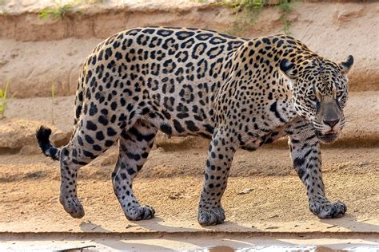

The jaguar is a compact and well-muscled animal. It is the largest cat native to the Americas and the third largest in the world, exceeded in size only by the tiger and the lion. It stands 68 to 75 cm (26.8 to 29.5 in) tall at the shoulders. It's size and weight vary considerably: weights are normally in the range of 56-96 kg (123-212 lb). Exceptionally big males have been recorded to weigh as much as 158 kg (348 lb). The smallest females weigh about 36 kg (79 lb). It is sexually dimorphic, with females typically being 10-20% smaller than males. The length from the nose to the base of the tail varies from 1.12 to 1.85 m (3 ft 8 in to 6 ft 1 in). The tail is 45 to 75 cm (18 to 30 in) long and the shortest of any big cat. It's muscular legs are shorter than the legs of other Panthera species with similar body weight.